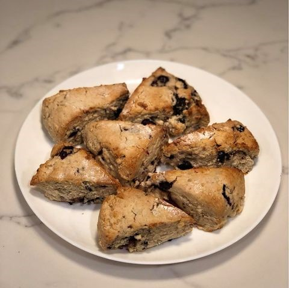
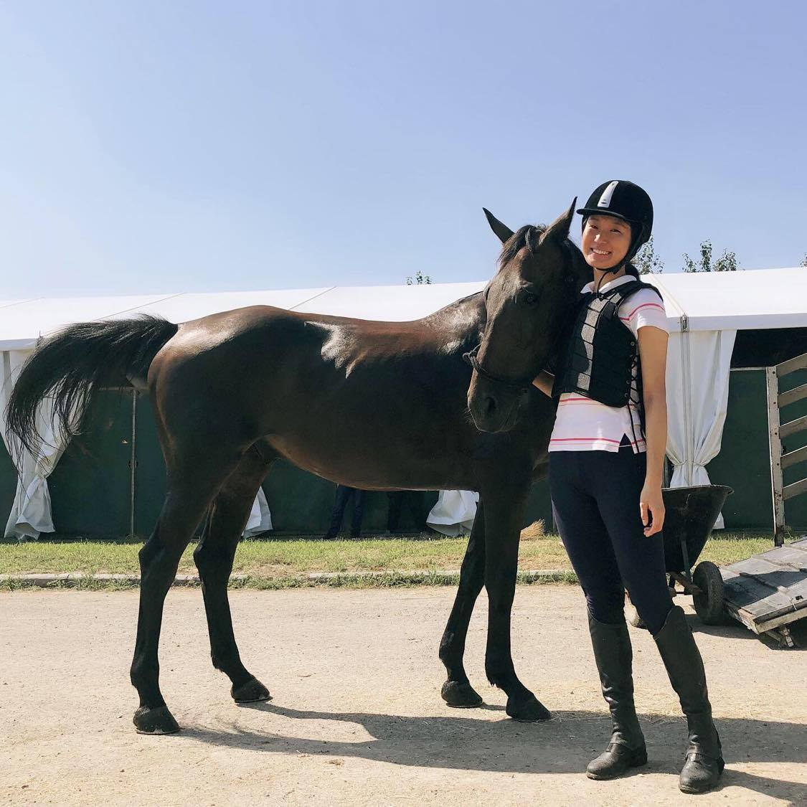

Human-Robot Interaction | Social Cognition
current projects
Teaching Norms to Social Robots
an collaboration project at the Humanity Centered Robotics Initiative
Human behavior is powerfully guided by social and moral norms. Robots that enter human societies must therefore behave in norm-conforming ways as well. However, there is currently no cognitive, let alone computational model available of how humans represent, activate, and learn norms. We offer first steps toward such a model and apply it to the design of a norm-competent social robot. We propose a general methodology for such a design, from empirical identification of relevant norms to computational implementations of norm learning to thorough and iterative evaluation of the robot’s norm compliance by means of community feedback.
A General Methodology for Teaching Norms to Social Robots, The 29th IEEE International Conference on Robot and Human Interactive Communication, 2020, Bertram Malle, Eric Rosen, Vivienne Bihe Chi, Matthew Berg, Peter Haas, Conference Article, In Press
Social Norm Network Activation Pattern in Visual Scene Processing
Social and moral norms are believed to be activated in highly context-specific ways and systematically organized in human cognition. In any given context (e.g., a public bathroom, a colleague’s office), it appears that a set of covarying norms is activated specifically suitable for this context. My research tries to answer two related questions: What cognitive processes drive people’s norm activation upon entering a scene and especially the covariation among a specific set of norms? Second, how can we computationally represent this activation process? Two network models can be schematically distinguished.
past projects
Cognitive Modeling of the tip-of-the-tongue Phenomenon using SOAR
LDA Topic modeling to characterize the superconductor technologies evolution
Brown University
2019-present
PhD training in Cognitive Science
University of Michigan-Ann Arbor
2015-2019
Bachelor of Science in Computer Science and Cognitive Science
Ann Arbor, MI
2018-2019
Research Assistant at SOAR@UM
Ann Arbor, MI
2017-2019
Co-President of the Michigan China Forum
Ann Arbor, MI
2015-2019
Co-President of the Cognitive Science Community at UMich
Berlin, Germany
2017 Summer
Project Management Intern at Wundertax

